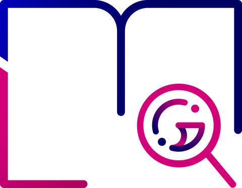

Digital Learning · Project Coordination · LMS
Bridging the Digital Divide:
From Evidence to Action
A self-paced microlearning series on the global digital divide and how schools can be connected at scale, made by the Geneva Research Lab for Digital Impact and published on UNICEF Agora. During my internship I coordinated its production and built the course on the platform.

Microlearning series · UNICEF Agora
Bridging the Digital Divide: From Evidence to Action
My contribution
- Coordinated day-to-day production of the video modules with the digital production team
- Built the scene-by-scene tracker the team updated daily: voiceover, animation, backgrounds, avatars, icons, music and quiz sounds
- Set up the course on UNICEF Agora: front page, videos and scripts, the interactive H5P quizzes inside each video, baseline questionnaire, course evaluation and certificate
The series is live and open to everyone.
See the course & sign up Explore the modules Watch on YouTubeHow a module came together
Each video involved many elements moving at the same time, so the work needed one shared view of where every scene stood.
- 01
Script
Each module started from a developed script.
- 02
Miro board
Scripts moved onto Miro boards, where the team discussed how each scene would be produced.
- 03
Scenes & elements
Every scene broke down into voiceover, animation, background, avatar, icons, music and quiz sounds.
- 04
Tracker
I built an Excel tracker that coded each scene and its elements. The production team updated it daily, scene by scene.
- 05
Agora
Finished videos went onto UNICEF Agora with their scripts attached.
- 06
H5P quizzes
I added interactive questions inside the videos, so learners answer as they watch.
In my experience, the tracker supported coordination across the many activities running at once and helped the team manage its time and resources.
Inside the course on Agora
Eleven parts, from the digital divide to the role of academia
- 00Introduction
- 01The Digital Divide: The Silent Enemy of the 21st Century
- 02The Divide That Costs Us All
- 03Innovative Partnerships for Global Scale: The Giga Model
- 04The Power of Visibility: Giga Maps
- 05From Visibility to Accountability: Giga Meter
- 06Financing School Connectivity: Turning Evidence Into Investments
- 07From Contract to Connection: Procurement as the Final Mile
- 08How the Internet Actually Works
- 09How Open Data, Open-Source Technologies, and Digital Public Goods Build Equitable Digital Infrastructure
- 10The Role of Academia in Advancing Digital Inclusion
Module titles as published on the Geneva Research Lab's course page.